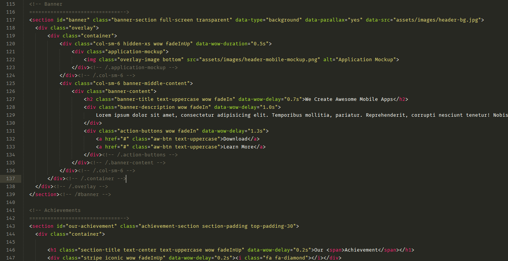

Thank you for purchasing our product. If you have any questions that are beyond the scope of this help file, please feel free to email via my user page contact form here. Thanks so much!
This Template is a responsive One Page HTML5 Template. It's followed HTML5 structure. All of the information within the main body area is nested within an HTML5 tag. You will find all content in specific HTML5 tags such as <header>, <section>, <aside>, <article>, <footer> etc tags. Every section is separated with comments. We followed all coding standard procedure.. Here is the general structure.

Make full screen and transparent section by add class:
class="full-screen transparent"
Add enable background:
data-type="background"
Turn off or on parallax effect by editing:
data-parallax="yes"
Add background image image by editing.
data-src="assets/images/header-bg.jpg"
I'm using a stylesheet to design the template with some other css framework.
The main css file (app.css) contains all of the specific stylings for the page. The file is separated into sections using:
/* 1.0 - General / Global Styles */ some codes /* 2.0 - Navigation */ some codes /* 3.0 - Banners */ some codes /* 5.0 - Features */ Some codes
If you would like to edit a specific section of the site, simply find the appropriate label in the CSS file, and then scroll down until you find the appropriate style that needs to be edited.
Any images that are placed within the blog section have 5px worth of padding and a light bluish background. If you would like to edit the display of these images, find the following section in the style sheet:
.article-item > .article-head > .article-image > img {
change styles here:
}
I use some javascript plugin in this template, you can find all plugin in the "dependencies" directory template folder.
Plugins:
My custom javascripts are stored in /assets/javascript/app.js file.
I've used the following images, icons or other files as listed.
Once again, thank you so much for purchasing this template. As I said at the beginning, I'd be glad to help you if you have any questions relating to this theme. No guarantees, but I'll do my best to assist. If you have a more general question relating to the themes on ThemeForest, you might consider visiting the forums and asking your question in the "Item Discussion" section.
CodexCoder Team